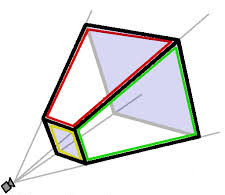

The tracking boundaries create a frustum shape in which hands are tracked. (A frustum is a truncated pyramid, with four side planes and two rectangular bases – see Figure 27 for an illustration.)

Figure 27: Tracking Boundaries
When a tracked hand reaches one of the boundaries (near, far, left, right, top, or bottom), an appropriate alert is fired. This allows you to notify your user that his/her hand is out of range.
 Tracking info is produced for the sensor’s entire field of view regardless of the selected tracking bounds. The tracking boundaries only affect the locations for which out-of-range alerts are produced.
Tracking info is produced for the sensor’s entire field of view regardless of the selected tracking bounds. The tracking boundaries only affect the locations for which out-of-range alerts are produced.
See SetTrackingBounds.